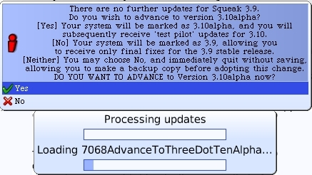

Image Update
We should check if we need to update our fresh Squeak image. You will need an active Internet connection on your computer before completing this step. You can skip this for later if no Internet access is available.
From the World menu, select the "help..." menu. In the Help menu select "update code from server".
In our example, the image is up-to-date. We are given the option to update our system to Squeak 3.10alpha. Do not do this. A confirmation dialog is presented reminding us to save the image. We will do this shortly.